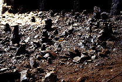
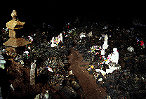
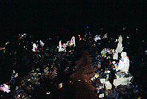
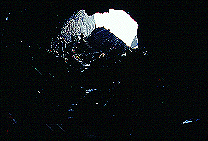
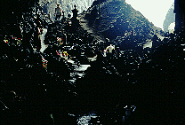
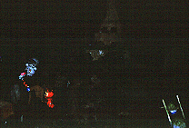

加賀の潜戸/島根県島根町
島根半島の日本海側、松江市の北方にある島根町に加賀の潜戸（「くけど」と読むそうな）という海食洞窟がある。
ここに行くにはグラスボートというやけに俗っぽい交通手段を使うためお気楽な観光客のおばちゃん集団などと乗り合わせることになる。そしてそのグラスボートはおっちゃん一人で切り盛りしている非常にローカルなボートなので、海の中が美しくないとか魚が見えないとか出航時間が決まってないで何時に出航するのか分らないといった類いの文句は言ってはいけないのである。
で、潜戸である。ここには新潜戸と旧潜戸の二つの海食洞窟がある。新潜戸のほうはトンネル場になっておりその中をボートで潜り抜けて行くタイプで旧潜戸のほうは単なる洞穴状の洞窟である。規模も新潜戸の方が大きい。しかしここで話題にしたいのは旧潜戸のほうである。
ここはこの近在の住民によって古くからまつられている賽の河原なのである。子供を亡くした親はここに来て亡き子供のために石を積んで供養するのだ。その強烈な雰囲気は新潜戸などを見てうわー凄いわねえ〜などとはしゃいでいたおばちゃん達を一瞬にして凍らせる位の破壊力を持った空間なのだ。
ボートは新潜戸を抜け、半島を一回りしたところで旧潜戸に付く。お気楽な自然の神秘を見せた後に強烈な民間信仰の神髄を見せるあたりニクい演出だ。
この旧潜戸は海に面した海食洞窟だが入り口に直に船が着けられる程大きな洞窟ではない。従って、洞窟の岩壁の土手っ腹に横穴を空けてトンネルが造られており、その向こうに小さな船着場があってそこに船を着ける案配になっている。
船着場に着き、トンネルに入る。洞窟内部までは50メートル近くあろうか。トンネルの壁面には数カ所穴が空いており、そこにお地蔵さんなどが奉られており賽の河原ムードを盛り上げている。
トンネルを抜けるとそこは丁度洞窟の一番海寄りの波打ち際から少し入ったところだった。
そして洞窟の奥の方に目をやると・・・
 
それは鬼気迫る光景だった。奥行きは精々30メートル程だろうか。見渡す限り小石が積まれている。ところどころにお供物や玩具が供えられている。
 
奥に行くほど海からの光りも弱まって来てだんだんと暗くなってくる。
そしてほとんど光が届かない最奥部、そこは四方の岩が一点に向かって収縮して、洞窟の終点となっているのだが、その一点に無数の玩具がギッチリと詰め込まれていたのであった。
それは子を亡くした親があの世に届けとばかりにこの世で一番あの世に近い場所＝あの世で一番この世に近い場所に玩具を供えたのだろう。
その玩具ギュウギュウ詰めの光景はあまりにも親の思い（子を亡くした無念と子供に玩具を与えられなかった無念）を物語っており、思わず手を合わせてしまう。つらい光景だ。
振り向けば、さっきまでキャーキャーやっていたおばちゃん達も神妙に手を合わせている。中には泣いてる者までいる。
というヘヴィーな雰囲気だったので、三脚＆フラッシュ撮影は出来なかったので詳細な写真がとれなかったよ。すまん（涙でファインダーが曇っていたという噂も）。
 
1999.7
珍寺大道場 HOME